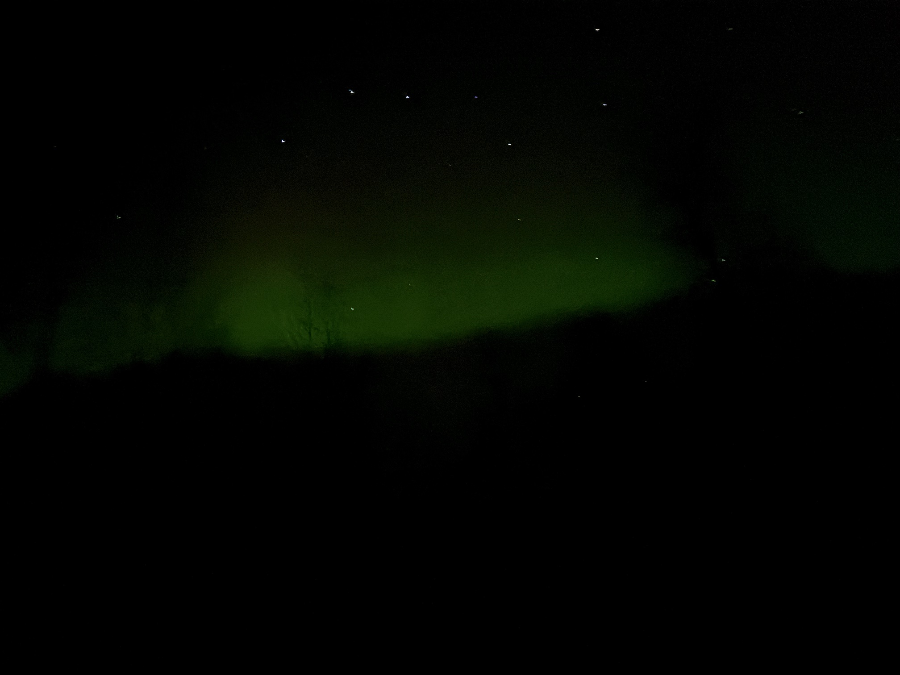
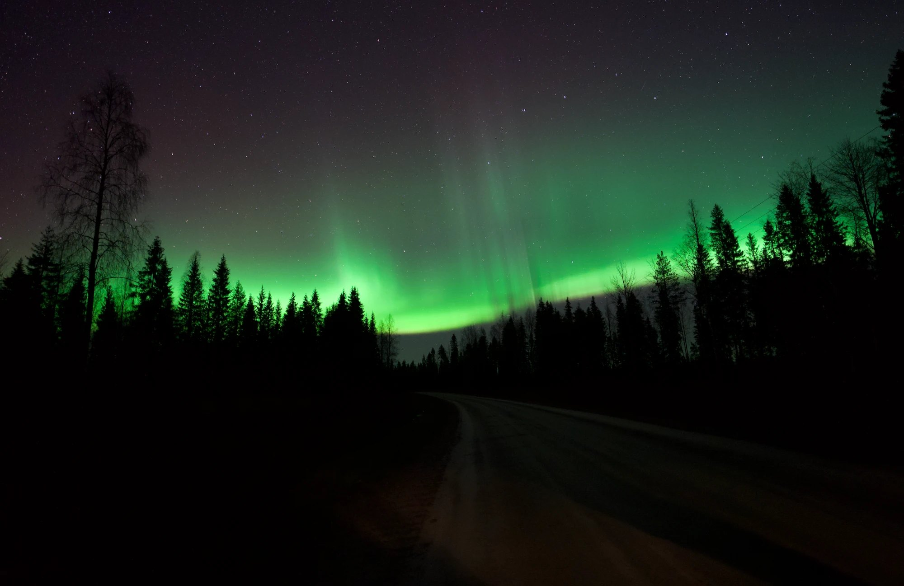
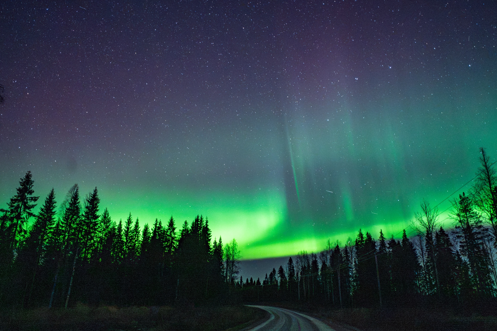

旅ブログ › 旅の準備
スマホでオーロラを撮る設定と撮り方｜iPhoneの失敗とカメラ実例
スマホでもオーロラは撮れますが、カギは「本体を動かさないこと」です。 公式の案内では、iPhone はナイトモードの秒数を「最大」にし、三脚か硬い場所に置きます。Pixel は天体写真モードを、固定して使います。 私たちは2026年10月のロヴァニエミで、iPhoneを手持ちで撮って失敗しました。三脚に載せたミラーレスカメラ（借りたもの）では、星までピントが合いました。
この記事では、設定の目安を公式情報で整理します。 カメラを借りた流れと、ツアーのカメラマンの写真も載せます。
スマホでオーロラは撮れる？ 私たちのiPhoneは失敗しました

撮影：私たち（iPhone 16 Pro・ナイトモード・手持ち）。星が線のようにぶれた失敗例使ったのは iPhone 16 Pro です。ナイトモードは使いましたが、手持ちでした。 暗い画面に、緑の光がぼんやり写る程度でした。星は点ではなく、短い線のようにぶれています。木もほとんど見えません。
原因ははっきりしません。私たちは「手ブレがあったのかもしれない」と考えています。 ナイトモードの秒数は、記録が残っていません。
一方で、手持ちで撮れた例もあります。 北海道新聞の記事では、2024年5月に石狩市で一般の方が撮った例が紹介されています。iPhone 手持ち・ナイトモード5秒です（出典：北海道新聞）。 撮れるかどうかは、オーロラの明るさや、本体をどれだけ止めていられるかにも左右されそうです。
iPhoneでオーロラを撮る設定（ナイトモード・固定・ProRAW）
Apple の公式サポートの説明を、撮る順に並べます（出典：Apple サポート「iPhone でナイトモードを使う」）。
- 対応機種：ナイトモードは iPhone 11 以降で使えます。
- 自動で切り替わる：暗い場所では自動でナイトモードになり、アイコンが黄色になります。
- 秒数を長くする：アイコン横の数字は、撮影にかかる時間です。スライダで「最大」にすると、露光時間（光を取り込む時間）が長くなります。
- 撮影中は動かさない：本体が動くとぶれます。硬く安定した場所に置くか、三脚を使うよう案内されています。
- 十字線に合わせる：iOS 14 以降は、動きを検知すると十字線が出ます。合わせるとぶれを減らせます。
iPhone 16 Pro は、Apple ProRAW（加工の幅が広い記録形式）にも対応しています（出典：Apple「iPhone 16 Pro - 技術仕様」）。 ProRAW は Pro のモデルの機能です。GIGAZINE は対応を「iPhone 12 Pro 以降」としています。iOS 26 の画面での設定手順も紹介しています（出典：GIGAZINE）。
観光局 Visit Norway は、スマホでもフラッシュを切るよう案内しています。デジタルズームは避け、RAW が使えるなら RAW で、とも書いています（出典：Visit Norway）。
Android（Pixel）なら夜景モードと天体写真モード
Google Pixel の公式ヘルプの要点です（出典：Google Pixel カメラ ヘルプ）。
- 夜景モード：シャッターを押したあと、写真が撮れるまで数秒は動かさない。
- 天体写真：スタンドや三脚などに固定し、手持ちでは撮らない。日没から45〜90分以上たってから。
- ぶれ対策：手動で使うとシャッター後に5秒のタイマーが入ります。セルフタイマー3秒でぶれを抑えるヒントもあります。
- ズーム：Pixel 4a（5G）以降は、天体写真は1x以上のズームでのみ使えます。
iPhone でも Pixel でも、公式の答えは「固定して、撮り終わるまで動かさない」です。
オーロラをカメラで撮る設定の目安（F値・シャッタースピード・ISO）
借りた α7 IV（ソニーのミラーレス一眼）と FE 20mm F1.8 G（広角の単焦点レンズ）で、パートナーが撮った1枚です。

撮影：パートナー（α7 IV・三脚・オートフォーカス）Beyond Arctic というオーロラツアーに参加した夜に撮りました。 三脚を使い、ピントはオートフォーカスです。 カーブする道と木のシルエットの上に、緑の帯と縦の筋が写りました。星にもピントが合っています。 パートナーの1枚が、下のAIに相談した範囲の設定だったかは確認できていません。
AIに相談して撮った設定の範囲
私たちのうち1人は、撮影前に AI（Gemini）に設定を相談しました。 返ってきた目安の範囲で撮っています。1枚ごとの正確な値は記録がありません。 メーカーや観光局の目安と並べました。
| 項目 | AIに相談した範囲 | 公式・観光局の目安（まとめ） |
|---|---|---|
| F値（絞り） | F1.8〜F2.2 | できるだけ小さく（いちばん開いた絞り） |
| シャッタースピード | 2〜4秒（動きが激しいとき）、6〜8秒（穏やかなとき） | 5〜15秒程度。速く動くときは短く |
| ISO感度 | 1600〜3200 | 800〜3200 |
表の5〜15秒はオーロラ向けの目安です。ソニーの15〜30秒は星空向けの目安です。AIに相談した範囲は推奨値ではありません。
- Visit Rovaniemi：5〜15秒程度から、いちばん開いた絞り、ISO800〜3200（出典：Visit Rovaniemi）
- Visit Norway：出発点は f/2.8・15秒・ISO1600。動きが速いときはシャッターを短く（出典：Visit Norway）
- ソニー：F値はできるだけ小さく、15〜30秒、ISO800〜3200（出典：ソニー「星を点で写す設定」）
F値（絞り）は小さいほど光を多く取り込めます。ISO感度は、光を感じる強さです。 相談した範囲と公式の目安を比べると、F値とISOはおおむね重なります。 シャッターは短めでした。Visit Norway も、速く動くときは短くするとしています。
星が流れない秒数は？（500ルール）
長く開けすぎると、地球の自転で星が線になります。 ソニーは、星を点で写せる秒数の目安として、次の計算式を紹介しています（出典：ソニー「星を点で写す設定」）。
- フルサイズ：500÷焦点距離
- APS-C：500÷（焦点距離×1.5）
- 例：14mm は約35秒、20mm は約25秒、35mm は約14秒
α7 IV はフルサイズです（出典：ソニー α7 IV 主な仕様）。 20mm のレンズなら、目安は約25秒です。 AIに相談して撮った範囲の2〜8秒は、それよりかなり短めでした。 ソニーも「この計算式はあくまでも目安です」としています。
オーロラ撮影のピントはオート？マニュアル？
パートナーのうまくいった1枚は、オートフォーカスで撮りました。
ただ、メーカーの星空の案内では、マニュアルフォーカス（手でピントを合わせる方法）が基本です（出典：ソニー「星を点で写す設定」）。 無限遠（いちばん遠く）でも合うとは限りません。画面を拡大して確かめるよう書かれています。 ニコンも、明るい星を拡大して合わせる方法です。気温の変化でずれることがあるので、再確認も大事です（出典：ニコン 星空クイックガイド）。
ツアーでは、カメラマンから「レンズの根元あたりを回せばピントを合わせられる」と教わりました。 「根元あたり」は私たちの覚えている言い方です。レンズにはリングが複数あるので、どれがフォーカスリングかは説明書で確かめてから回してください。 α7 IV の説明書では、マニュアルフォーカスの手順は次のとおりです（出典：ソニー α7 IV ヘルプガイド「マニュアルフォーカス」、同「ピント拡大」）。
- メニューのフォーカスモードで「マニュアルフォーカス」を選ぶ
- フォーカスリングを回して合わせる（リングを回すと、フォーカス距離の目安が出る）
- ［ピント補助］→［ピント拡大］で拡大し、星が点になっているか確かめる
三脚・タイマー・寒さ対策（バッテリーと結露）
Visit Rovaniemi は、道路わきに車を止めないよう案内しています。暗い季節は反射材を身につけ、現地の安全の案内に従うように、としています（出典：Visit Rovaniemi）。
ソニーは、三脚では手ブレ補正をオフにするよう案内しています。リモコンがなければ、セルフタイマー2秒を使います（出典：ソニー「夜空の星を撮る」）。 α7 IV のセルフタイマーには、10秒・5秒・2秒があります（出典：ソニー α7 IV 主な仕様）。
メーカーの使用温度は0〜40℃で、0℃を下回る場所はその範囲外です（出典：ソニー α7 IV 主な仕様）。 私たちが行った10月は、感覚では最低−5℃くらいでした（服装の記事「オーロラ旅の持ち物と服装」）。人の寒さ対策も、その記事にまとめています。
ソニーのヘルプガイドには、低温の注意もあります（出典：ソニー α7 IV ヘルプガイド「バッテリーについて」、同「使用上のご注意」）。
- 寒いとバッテリーの性能が下がり、使える時間が短くなる
- 電池はポケットなどで温め、撮影直前に付ける。予備も用意する
- 極端に寒い場所での撮影はすすめない
- 寒い所から暖かい所へ急に持ち込むと結露する。結露したら電源を切り、約1時間置く
Visit Rovaniemi も、寒さで電池が早く減るので、満充電のモバイルバッテリーか予備電池を、としています（出典：Visit Rovaniemi）。
オーロラ撮影のカメラはレンタルでも（レンティオ）
α7 IV などの一式は、レンタルサービスのレンティオで借りました。 注文画面にあったのは、次の4点です。
- ソニー α7 IV ボディ
- ソニー FE 20mm F1.8 G（SEL20F18G）
- ソニー 予備バッテリー NP-FZ100
- Velbon 小型トラベル三脚 UT-3AR
お届け予定は2026年10月7日の19〜21時で、自宅に届きました。 返送手続きの期限は10月23日で、返却はコンビニに持ち込みました。 総額は46,737円（クレジットカード払い）です。内訳は確認できていません。
料金はプランや時期で変わるので、レンティオの公式ページで確かめてください。 公式ページには、次の注意も載っています（出典：レンティオ α7 IV）。
- α7 IV のボディにレンズは付かない。SDカードは別に必要
- 本人確認にマイナンバーカードが必要
- 商品が届く日が1日目。返送日の24時までに発送すれば返却完了
自信がなければツアーのカメラマンに撮ってもらう
自分で撮るのが不安なら、カメラマンが同行するツアーを選ぶ方法もあります。 私たちが参加した Beyond Arctic のツアーには、カメラマンによる撮影がついていました。頼んだ分だけ撮ってくれました。 写真は後日、ダウンロード用のURLが送られてきました。
私たちがいちばん気に入っている1枚は、このカメラマンに撮ってもらった写真です。

撮影：Beyond Arctic のカメラマン（ツアーで撮ってもらった写真）上のパートナーの1枚と、同じ場所で撮られた別の1枚です。 お金を払って参加したツアーで、こういう写真を撮ってもらえる。それも選び方の1つです。
まとめ
- スマホでもオーロラは撮れます。ただし、本体の固定が先です。私たちの iPhone 手持ちの1枚は、星がぶれました。
- iPhone はナイトモードの秒数を「最大」にし、三脚か硬い場所に置く。Pixel は天体写真モードを固定して使う。
- カメラなら、F値はできるだけ小さく、ISO は800〜3200あたりが公式・観光局の目安です。AIに相談した範囲と比べると、F値とISOはおおむね重なり、シャッターは短めでした。
- ピントは、オートで合わないときに備えて、マニュアルと拡大の手順を覚えておく。
- 夜は道路わきに車を止めず、反射材を身につける。α7 IV の使用温度は0〜40℃。寒い夜はバッテリーを温め、予備を持つ。
- カメラは借りる、撮影はツアーのカメラマンにも頼む、という選び方もあります。
出かける前に、オーロラが出そうな夜かを確かめておきましょう。予報の見方は「Kp指数の見方」をどうぞ。 ロヴァニエミで今夜見えそうかは、極光ナビの「ロヴァニエミのオーロラ予報」で確かめられます。
参考
- Apple サポート「iPhone でナイトモードを使う」（確認日 2026-11-03）
- Apple「iPhone 16 Pro - 技術仕様」（確認日 2026-11-03）
- Google Pixel カメラ ヘルプ（夜景モード・天体写真）（確認日 2026-11-03）
- ソニー「夜空の星を撮る」（確認日 2026-11-03）
- ソニー「星を点で写す設定（星空編）」（確認日 2026-11-03）
- ソニー α7 IV 主な仕様（確認日 2026-11-03）
- ソニー α7 IV ヘルプガイド「マニュアルフォーカス」（確認日 2026-11-03）
- ソニー α7 IV ヘルプガイド「ピント拡大」（確認日 2026-11-03）
- ソニー α7 IV ヘルプガイド「バッテリーについて」（確認日 2026-11-03）
- ソニー α7 IV ヘルプガイド「使用上のご注意」（確認日 2026-11-03）
- ニコン 星空クイックガイド（確認日 2026-11-03）
- Visit Rovaniemi「A guide for responsible Northern Lights experience in Rovaniemi」（確認日 2026-11-03）
- Visit Norway「How to photograph the northern lights」（確認日 2026-11-03）
- 北海道新聞「スマホでオーロラ撮るには？」（確認日 2026-11-03）
- GIGAZINE「iPhoneでオーロラを撮る」（確認日 2026-11-03）
- レンティオ α7 IV 商品ページ（確認日 2026-11-03）